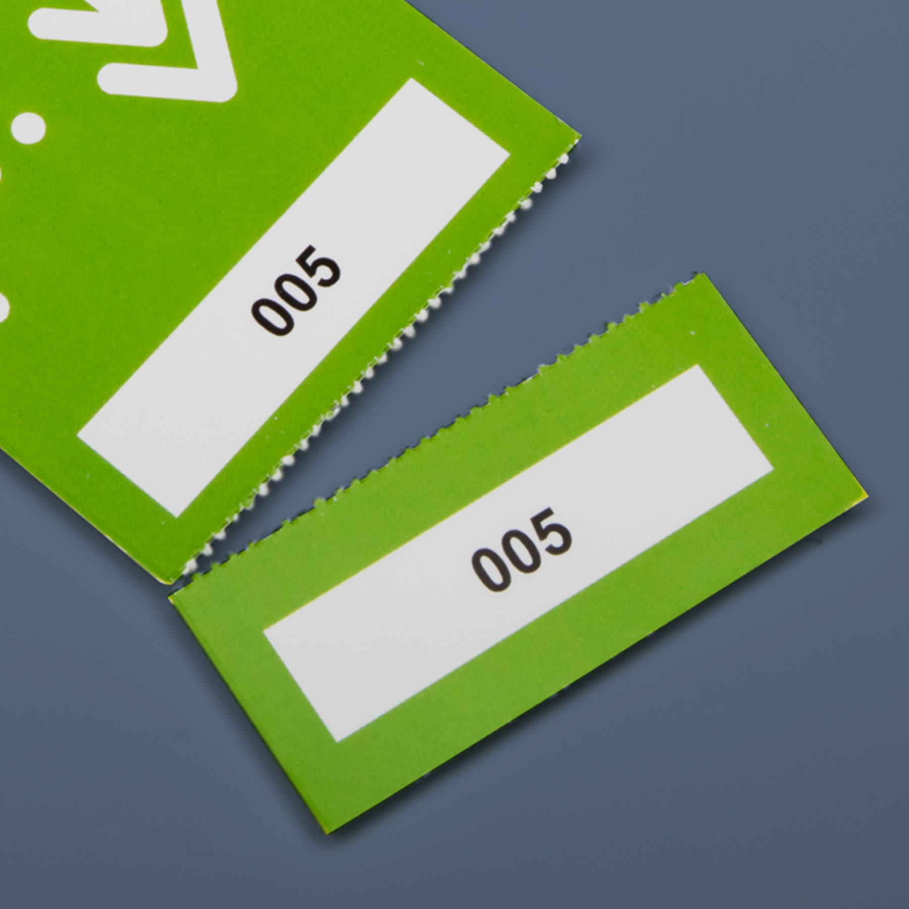

Perforeren
Wat is Perforeren?
Definitie
Perforeren is een druktechniek waarbij een reeks kleine gaatjes in het papier wordt gemaakt. Dit maakt het mogelijk om delen van het papier gemakkelijk af te scheuren, zoals bij coupons, formulieren of tickets. Het proces is ontworpen om een schone en gecontroleerde scheurlijn te creëren, zonder dat het papier verder scheurt of beschadigt.
Voordelen van Perforeren
- Handig in Gebruik: Maakt het eenvoudig om delen van een document af te scheuren zonder schaar of messen.
- Professionele Presentatie: Creëert een nette, uniforme scheurlijn voor een professionele uitstraling.
- Flexibiliteit: Kan worden toegepast op verschillende materialen, zoals papier, karton of zelfs plastic.
Toepassingen van Perforeren
Perforeren wordt vaak gebruikt voor:
- Tickets: Voor eenvoudig afscheurbare toegangskaarten.
- Coupons: Voor het eenvoudig afscheuren van kortingsbonnen of vouchers.
- Formulieren: Voor secties die moeten worden ingevuld en vervolgens afgescheurd, zoals bij ontvangstbewijzen.
- Verpakkingen: Voor een gemakkelijke opening van verpakkingen of zakjes.
Hoe Werkt Perforeren?
Bij het perforeren worden kleine gaatjes in een rechte lijn door het papier geponst, meestal door middel van een machinale stans. Dit creëert een lijn van zwakke punten langs welke het papier gemakkelijk kan worden gescheurd. De grootte en afstand van de perforaties kunnen worden aangepast afhankelijk van de toepassing.
Belangrijke Overwegingen bij Perforeren
- Afstand tussen Perforaties: De ruimte tussen de gaatjes bepaalt hoe gemakkelijk het papier kan worden afgescheurd.
- Materiaal: Verschillende materialen kunnen verschillende perforatietechnieken vereisen voor optimale resultaten.
- Precisie: De perforatielijn moet nauwkeurig zijn om ervoor te zorgen dat het papier op de juiste plaats scheurt.